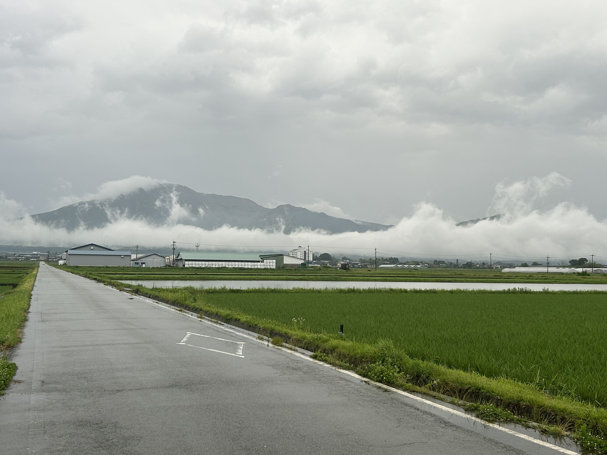
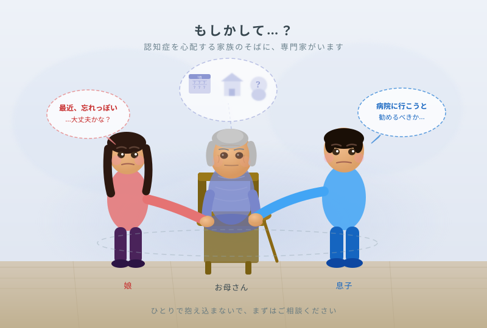
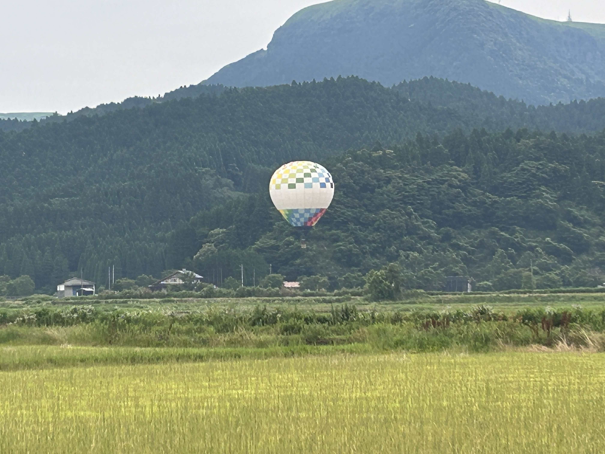
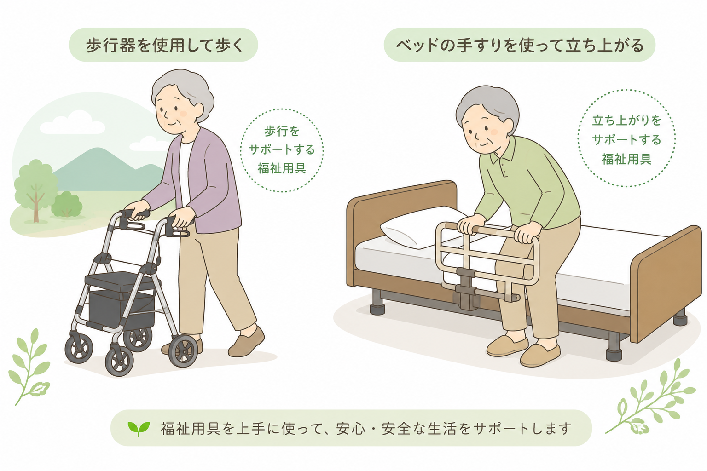
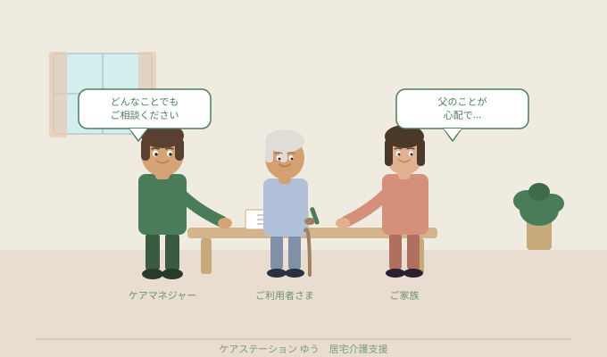
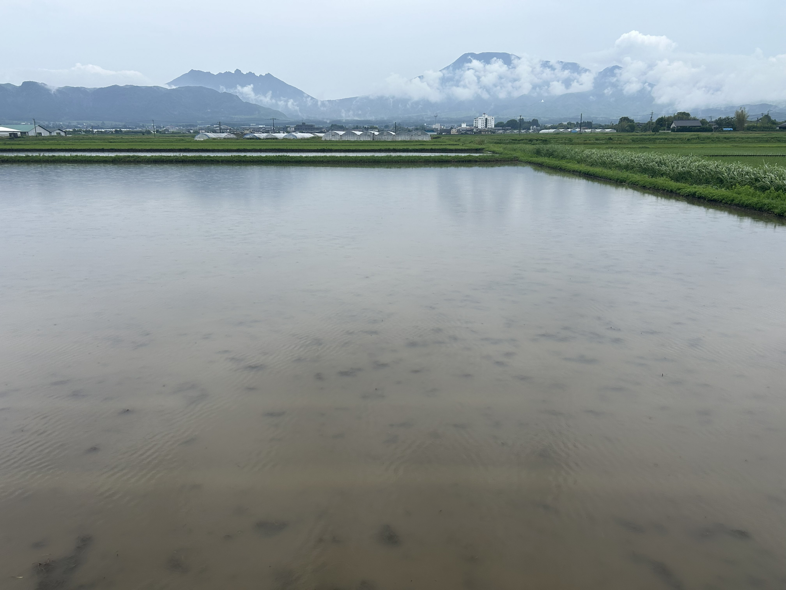
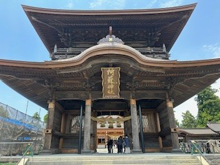
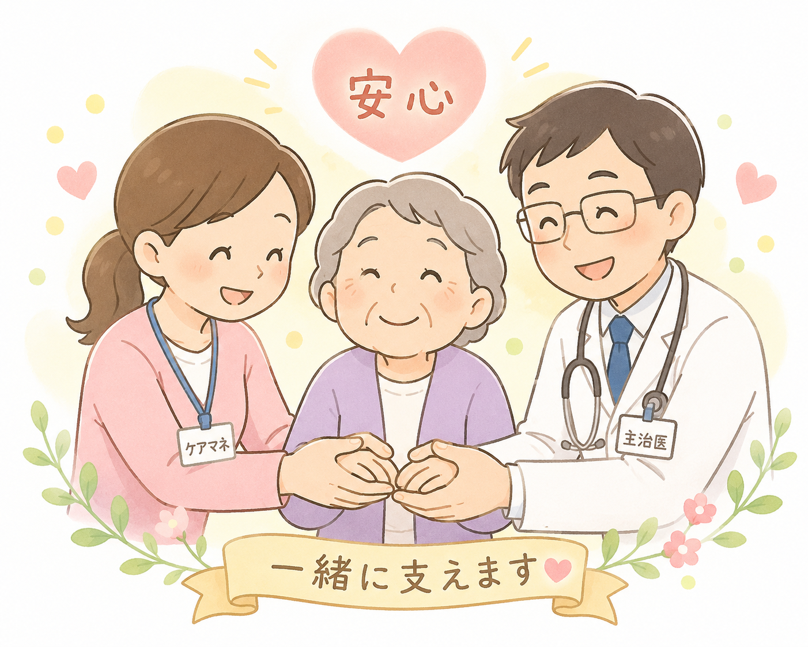
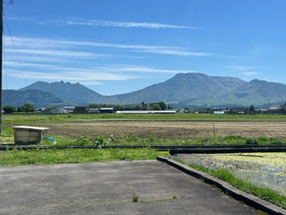
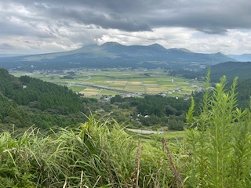

令和８年６月２４日
雨のあとの阿蘇、山から雲が流れる朝
梅雨の時期、阿蘇はいつもと少し違う表情を見せてくれます。 雨が降ったあとの田んぼ道を走っていると、山の稜線に沿って白い雲がゆっくりと流れ落ちているのが見えました…
続きを読む →

令和８年６月２３日
もしかして…と思ったら。認知症の早期サインと、家族ができること
「最近、同じことを何度も聞くようになった気がする」 「約束をよく忘れるようになった」 そんな小さな変化が気になり始めたとき、多くの方が「もしかして認知症？」と不…
続きを読む →

令和８年６月１５日
阿蘇の初夏、田園風景に浮かぶ熱気球
日曜日、うっかり職場に忘れ物をしてしまいました。「休日にわざわざ取りに行くのもなぁ……」と、少し重い気持ちで車を走らせていたのですが、ふと視線を上げると、目の前にこんな素敵な景色が広がっていました。
続きを読む →

令和８年６月１１日
ガマンしないで、上手に頼る！初めての「福祉用具」選び
「最近、立ち上がるのがきつそうだな・・・・・・・」
「お風呂で滑らないか心配だけど、どうしたらいいんだろう？」
「お風呂で滑らないか心配だけど、どうしたらいいんだろう？」
続きを読む →

令和８年６月１０日
ケアマネジャーって何をしてくれる人？ 初めて介護保険を使う方へ
「親が介護保険を使うことになったけど、ケアマネジャーって何をしてくれる人なの？」——そんなご質問をよくいただきます。初めて介護保険を使う方やそのご家族にとって、ケアマネジャーという存在はなかなかイメージしにくいかもしれません。今回は、ケアマネジャーの役割をできるだけわかりやすくご説明します。
続きを読む →

令和８年６月９日
阿蘇の梅雨どき、ご高齢の方が気をつけたい体調管理のヒント
阿蘇の梅雨は霧が深く、寒暖差も大きい季節。ご高齢の方が気をつけたいポイントを現場目線でご紹介します
続きを読む →

令和８年６月５日
阿蘇神社の楼門、堂々と復活しました！
熊本地震で倒壊し、長年の修復工事を経て復活した阿蘇神社の楼門。改めて目の前に立つと、その堂々たる姿に胸が熱くなりました。
続きを読む →

令和８年５月３１日
地域の「お医者様」と「介護」の架け橋として！
私たちケアマネジャーの大切な仕事のひとつに、ご利用者さまの「主治医の先生との連携」があります。
続きを読む →

令和８年５月３０日
今日の阿蘇山は最高のご褒美でした！
今日は担当者会議の帰りに、素晴らしい五月晴れ！根子岳・高岳もくっきりときれいに微笑んでくれています。
続きを読む →

令和８年５月２９日
私たちの事務所を紹介します！
こんにちは、ケアステーションゆうです。今回は、私たちが毎日働いている事務所をご紹介します！
続きを読む →

令和８年５月２８日
はじめまして！「ケアステーションゆう」です。ブログ始めました！
内牧にある「ケアステーションゆう」です。このたびホームページが完成し、スタッフの日常や事業所の雰囲気をお伝えする「スタッフ日記」もスタートします。どうぞよろしくお願いいたします！
続きを読む →
該当する記事がありません。